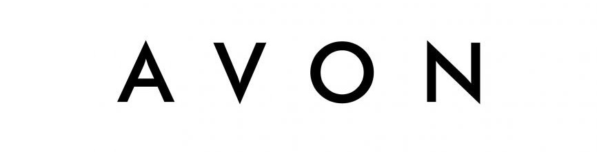

The first products to bear an Avon brand name were launched in 1928. The California Perfume Company filed for its first "Avon" trademark on a beauty product in 1932, and officially changed its name to Avon in 1939.
Avon became a publicly-traded stock company in 1946, and expanded its business around the world over the second half of the 20th century.
In 2011, the company celebrated 125 years of business and has over six million sales representatives operating in more than 100 countries today. The company remains relevant in today's market through its use of technology for its products and for marketing, and has reached a new generation of customers through its use of celebrity spokesmodels such as Reese Witherspoon, Courtney Cox and Patrick Dempsey.
Avon expanded its offering to the youth market with the introduction of a new brand, mark, in 2003.
Perfumes have long been a staple in the Avon line, from the California Perfume Company's "Little Dot Set" of fragrances to the celebrity-endorsed fragrances offered by the company in the 21st century.
Main Activity: Cosmetics
Parent Company: Natura &Co